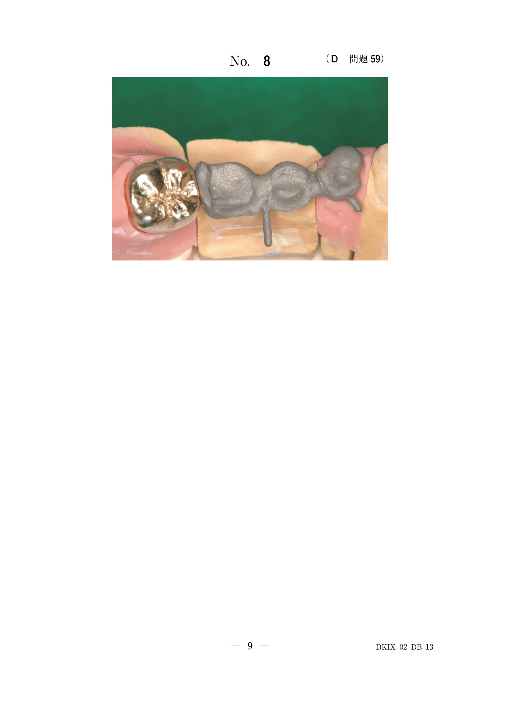

カプノメータ（カプノグラフィ）は、呼気終末二酸化炭素分圧（ETCO₂/PETCO₂）を測定・表示する機器である。
非侵襲的かつ連続的に換気状態をモニターできる。
ETCO₂は肺胞内のCO₂分圧を反映し、動脈血二酸化炭素分圧（PaCO₂）に近似する。
35〜45mmHg（PaCO₂とほぼ同等）
| 換気状態 | ETCO₂ | 対応 |
|---|---|---|
| 過換気 | <35mmHg | 換気量を減らす |
| 正常 | 35〜45mmHg | 維持 |
| 低換気 | >45mmHg | 換気量を増やす |
カプノグラム（ETCO₂の波形）を観察することで、様々な異常を検出できる。
| モニター | 測定項目 | 主な用途 |
|---|---|---|
| パルスオキシメータ | SpO₂、脈拍 | 酸素化の評価 |
| カプノメータ | ETCO₂ | 換気の評価 |
| 血液ガス分析 | PaO₂、PaCO₂、pH | 総合的な呼吸評価 |
全身麻酔中の患者のモニタ画面の写真（別冊No.13）を別に示す。
矢印で示す測定値を指標として麻酔中に調整するのはどれか。1つ選べ。

【解説】矢印で示されているのはEtCO₂（31mmHg）である。EtCO₂は換気状態の指標であり、これを参考に換気量を調整する。EtCO₂が低ければ換気量を減らし、高ければ増やす。輸液量は血圧・尿量、意識レベルはBISモニター、吸入酸素濃度はSpO₂、吸入麻酔ガス濃度は麻酔深度で調整する。